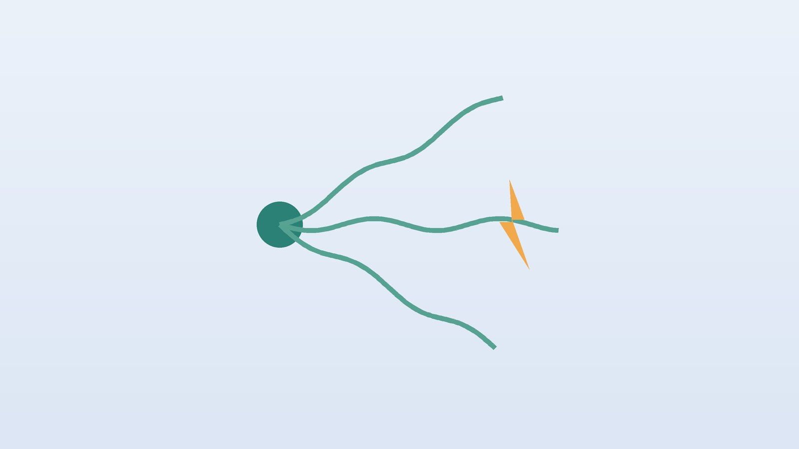

건강 칼럼 · 인천 삼차신경통 한의원
얼굴에 전기가 오듯 찌릿하다면, 삼차신경통 확인과 한방 치료

나의 얼굴 통증, 이런 모습인가요?
- 얼굴 한쪽에 전기가 오듯 찌릿한 통증이 몇 초씩 반복된다
- 세수, 양치, 면도, 화장을 할 때 통증이 터진다
- 밥을 씹거나 말할 때 통증이 와서 식사를 피하게 된다
- 찬 바람이 얼굴에 닿으면 통증이 시작된다
- 통증이 없는 기간이 있다가 다시 몰려온다
- 통증이 윗입술·코 옆이나 아래턱·잇몸 쪽에 주로 온다
이 체크리스트는 진단 도구가 아니라 상담이 필요한지 가늠해 보는 참고용입니다.
삼차신경통은 왜 생기나요?
삼차신경은 이름처럼 세 갈래로 나뉘어 이마와 눈, 위턱과 뺨, 아래턱의 감각을 맡습니다. 유럽신경과학회(EAN) 삼차신경통 진료지침은 삼차신경통을 한쪽 얼굴의 신경 분포를 따라 짧고 강한 전기 같은 통증이 반복되며, 가벼운 자극으로 유발되는 질환으로 정의합니다. 가장 흔한 원인은 뇌 안에서 혈관이 신경 뿌리를 누르는 것이며, 50대 이후 여성에게 조금 더 많습니다.
같은 지침은 삼차신경통이 의심되면 MRI로 혈관 압박과 다른 원인을 확인하고, 첫 치료로 카바마제핀이나 옥스카바제핀을 쓰도록 권합니다. 약으로 조절되지 않거나 부작용이 크면 신경외과에서 미세혈관감압술 같은 수술을 고려합니다. 많은 분이 처음에 치통으로 생각해 치과 치료를 먼저 받는 경우가 많은데, 치아에 이상이 없는데도 통증이 계속된다면 삼차신경통을 의심해 보세요.
신경과 진료와 MRI가 먼저 필요한 신호
- 40세 이전에 처음 시작됐다
- 양쪽 얼굴에 모두 통증이 있다
- 얼굴 감각이 둔해지거나 저리다
- 통증 외에 시야 이상, 청력 저하, 어지럼, 팔다리 힘 빠짐이 있다
- 통증이 짧게 끊기지 않고 하루 종일 지속된다
이런 경우 종양이나 다발성경화증, 대상포진 후 신경통 같은 다른 원인일 수 있어 정밀 검사가 필요합니다.
한의학은 삼차신경통을 어떻게 보나요?
한의학에서는 얼굴에 나타나는 통증을 면통(面痛)이라 하였고, 갑자기 번개처럼 치고 사라지는 모습이 바람의 성질과 닮았다고 하여 풍(風)과 연결 지었습니다. 바람은 빠르게 움직이고 위로 오르며 갑자기 왔다가 사라진다는 특징이 있는데, 삼차신경통의 '찌릿하고 순식간에 지나가는 통증'과 꼭 닮았기 때문입니다.
얼굴에는 위장과 연결된 족양명위경(足陽明胃經)과 대장과 연결된 수양명대장경(手陽明大腸經)이 지나갑니다. 그래서 찬 바람이 얼굴 경락에 들어와 막히거나, 위에 쌓인 열이 경락을 따라 얼굴로 오르거나, 스트레스로 생긴 간의 열이 위로 치밀거나, 오래된 통증으로 혈의 흐름이 막히면 면통이 생긴다고 보았습니다. 같은 통증이라도 찬 바람에 심해지는지, 뜨거운 음식에 심해지는지, 화가 나면 심해지는지에 따라 치료 방향이 달라집니다.
나의 통증은 어떤 유형일까?
1. 풍한(風寒) 찬 바람에 터지는 유형
- 이런 분에게 많아요
- 겨울과 에어컨 바람에 통증이 잦은 분
- 나타나는 모습
- 찬 바람이 얼굴에 닿으면 통증이 터지고 따뜻하면 덜하다
- 함께 오는 몸의 신호
- 목·어깨 뻣뻣함, 오한
- 진찰에서 보이는 모습
- 설태가 얇고 하얌, 맥이 긴장됨
- 치료 방향
- 찬 기운을 흩고 경락을 여는 방향 (천궁다조산 계열)
- 오늘부터 해 볼 것
- 외출할 때 마스크와 목도리로 얼굴과 목을 감싸세요.
2. 위화(胃火) 뜨거운 열이 오르는 유형
- 이런 분에게 많아요
- 맵고 뜨거운 음식, 술을 즐기는 분
- 나타나는 모습
- 씹거나 뜨거운 음식을 먹을 때 위턱·아래턱 통증이 심하다
- 함께 오는 몸의 신호
- 잇몸 붓기, 입냄새, 변비
- 진찰에서 보이는 모습
- 혀가 붉고 설태가 누렇게 마름
- 치료 방향
- 위의 열을 내려 얼굴 경락을 식히는 방향 (청위산 가감)
- 오늘부터 해 볼 것
- 미지근하고 부드러운 음식을 드세요.
3. 간화상염(肝火上炎) 화가 치밀면 심해지는 유형
- 이런 분에게 많아요
- 스트레스가 크고 성격이 급한 분
- 나타나는 모습
- 화가 나거나 긴장하면 통증이 몰려온다
- 함께 오는 몸의 신호
- 눈 충혈, 두통, 입이 씀, 잠을 설침
- 진찰에서 보이는 모습
- 혀 가장자리가 붉고 맥이 팽팽하고 빠름
- 치료 방향
- 간의 열을 내리고 치솟는 기운을 가라앉히는 방향 (용담사간탕 계열)
- 오늘부터 해 볼 것
- 잠들기 전 10분 복식호흡으로 긴장을 내려놓으세요.
4. 기허혈어(氣虛血瘀) 오래되어 막힌 유형
- 이런 분에게 많아요
- 통증이 수년째 이어지고 약을 오래 드신 분
- 나타나는 모습
- 통증 부위가 정해져 있고 찌르는 듯하며 기운이 없다
- 함께 오는 몸의 신호
- 피로, 얼굴빛이 어두움
- 진찰에서 보이는 모습
- 혀가 어둡고 반점이 있음, 맥이 껄끄러움
- 치료 방향
- 기운을 북돋우며 막힌 혈을 푸는 방향 (보양환오탕 계열)
- 오늘부터 해 볼 것
- 가벼운 걷기로 몸 전체의 순환을 도우세요.
한의원에서는 어떻게 진찰하나요?
- 검사와 진단 확인: 신경과 진단과 MRI 결과, 복용 중인 약과 용량을 확인합니다.
- 통증 지도: 통증이 오는 위치(이마, 뺨, 턱), 유발 동작, 하루 횟수를 여쭙니다.
- 약 부작용: 어지럼, 졸림, 피로, 소화 불편 같은 약 부작용 정도를 봅니다.
- 설진·맥진: 찬 기운, 열, 긴장, 막힘의 비중을 판단합니다.
침·약침·한약 치료는 어떻게 하나요?
1. 침 치료
통증이 심한 시기에는 얼굴의 유발 부위를 직접 자극하지 않고, 손과 발의 먼 혈자리부터 씁니다. 손등의 합곡(合谷), 발등의 태충(太衝), 발목 위 내정(內庭) 같은 혈은 얼굴로 오르는 열과 긴장을 내리는 데 씁니다. 통증이 가라앉는 시기에는 이마 쪽은 양백(陽白), 뺨 쪽은 사백(四白)과 하관(下關), 턱 쪽은 협거(頰車)와 대영(大迎)처럼 통증 갈래에 맞춰 부드럽게 더합니다.
침 치료는 약물 치료를 대신하는 것이 아니라 함께 쓰는 보조 치료입니다. 침 치료가 삼차신경통 통증을 줄였다는 연구들이 있지만 대부분 규모가 작아, 통증 일지로 효과를 확인하며 진행합니다.
2. 약침
목 뒤와 어깨, 턱관절 주변의 굳은 근육에 약침을 적용해 얼굴로 이어지는 긴장을 줄입니다. 통증 유발 부위에는 직접 시술하지 않습니다.
3. 한약
유형별 처방으로 통증을 부르는 몸 상태를 다스리면서, 신경 통증약으로 생긴 어지럼, 졸림, 소화 불편을 함께 살핍니다. 복용 중인 약은 임의로 줄이지 말고, 통증이 줄면 담당 의사와 상의해 조절하세요.
원장님이 네이버 블로그에 진료 이야기와 건강 정보를 꾸준히 올리고 있습니다. 더 많은 이야기는 블로그에서 확인해 보세요.
블로그 보기치료는 어떤 순서로 진행되나요?
- 신경과 확인 MRI와 진단, 약물 치료를 먼저 시작합니다.
- 첫 한방 진료 통증 지도와 유형을 정하고 통증 일지를 안내합니다.
- 2~6주 주 2회 안팎의 침 치료와 한약으로 통증 횟수와 강도를 줄입니다.
- 유지기 통증이 줄면 간격을 늘리고, 재발 시기(겨울, 피로)를 대비합니다.
삼차신경통은 좋아졌다가 다시 몰려오는 경과가 흔해, 통증이 없는 시기에도 유발 요인을 관리하는 것이 중요합니다.
통증을 덜 부르는 생활 관리
- 미지근한 물: 세수와 양치는 미지근한 물로 하고, 부드러운 칫솔을 씁니다.
- 바람 막기: 찬 바람, 에어컨, 선풍기 바람이 얼굴에 직접 닿지 않게 합니다.
- 씹기 조절: 통증이 심할 때는 부드러운 음식을 통증이 덜한 쪽으로 씹습니다.
- 영양: 통증 때문에 식사를 거르면 체력이 떨어지니 죽이나 스프로라도 챙깁니다.
- 통증 일지: 통증 시간, 유발 동작, 강도를 적어 진료 때 보여 주세요.
다른 진료가 함께 필요한 경우
- 약으로 조절되지 않으면 신경외과 상담으로 수술 치료를 알아보세요.
- 치아가 원인인지 헷갈리면 치과 진찰로 확인하되, 불필요한 발치는 피하세요.
- 대상포진을 앓은 뒤 생긴 얼굴 통증은 다른 치료가 필요합니다.
- 통증으로 우울감이 깊어졌다면 정신건강의학과 상담을 함께 받으세요.
자주 묻는 질문 Q&A
- Q1. 치통인 줄 알고 이를 뽑았는데도 아파요.
- 삼차신경통은 치통으로 오해되는 경우가 많습니다. 신경과에서 진단을 받아 보세요.
- Q2. 약을 먹고 있는데 침을 같이 맞아도 되나요?
- 함께 받을 수 있습니다. 약은 임의로 끊지 마세요.
- Q3. 얼굴에 침을 놓으면 더 아프지 않나요?
- 통증이 심할 때는 얼굴의 유발 부위를 피하고 손발의 혈자리부터 씁니다.
- Q4. 수술을 꼭 해야 하나요?
- 약으로 조절되면 수술 없이 지낼 수 있습니다. 조절되지 않으면 신경외과와 상의하세요.
- Q5. 겨울에 더 심해지는 이유가 있나요?
- 찬 바람이 유발 요인이 되기 때문입니다. 얼굴과 목을 따뜻하게 하세요.
- Q6. 완치가 되나요?
- 저절로 좋아지는 기간이 있지만 재발할 수 있어 장기적으로 관리합니다.
- Q7. 치료는 얼마나 받아야 하나요?
- 보통 2~6주 동안 통증 일지를 보며 경과를 확인합니다.
- Q8. 한약이 약 부작용을 줄여 주나요?
- 어지럼, 피로, 소화 불편 같은 증상을 살펴 처방에 반영합니다.
문원열 대표원장한의사 · 365스마일한의원
인천 서구 가정동 한자리에서 10년 넘게 진료하며, 환자 한 분 한 분의 아픔을 깊이 들여다보고 근본적인 원인을 찾는 진료를 지향합니다.
진료 안내
- 진료시간
- 평일 09:00~20:00 (점심시간 13:00~14:00)
토·일·공휴일 09:00~15:00 - 주소
- 인천광역시 서구 가경주로 46, 2층 (가정동)
인천2호선 가정중앙시장역 인근
영상으로 길 안내 보기 → - 주차
- 한의원 건물 바로 앞 1층 도원주차장
- 예약
- 예약 바로가기 또는 전화 예약
진료시간은 사정에 따라 바뀔 수 있으니 방문 전 전화로 확인해 주세요.
참고 자료
- Bendtsen L, et al. European Academy of Neurology guideline on trigeminal neuralgia. European Journal of Neurology, 2019 — 원문
- 질병관리청 국가건강정보포털 — 원문
※ 이 글은 일반적인 건강 정보이며, 개인의 상태에 따라 치료 방법과 결과는 다를 수 있습니다. 정확한 진단과 치료는 진료를 통해 결정됩니다. 침·약침 시술 후 드물게 멍, 통증 등이 생길 수 있습니다.